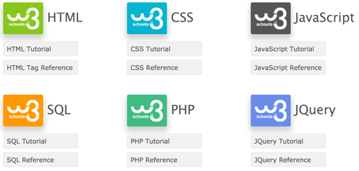

W3C
"W3Schools is optimized for learning, testing, and training" -- W3C
I find this website very useful in developing a website, because it shows tutorial and it is not only limited into html it has tutorials of css, php and the like. The W3C make their objectives pretty clear to the viewer of the website
Here is the W3C Schools website: w3schools.com
Objectives
- W3C gives a choices to the viewer on its home page and the viewer will choose as to whether which one would they wanted to learn either html, css,php and the like.
 - W3C is even more effective to deliver their objective by providing the TRY IT page, where in the codes or examples format can be seen when it is executed properly. On the TRY IT the viewer can manipulate the codes and view the result.
Procato
I like the way procato plays with the colours on their website because they mix up light with dark, light with light and dark with dark. Procato knows how to play with colours, it is a website that lot of different things are tested (search algorithms, dynamic color shemes, SEO, information structures, performance in general, various hosting solutions, etc., etc.). It is also the site where I get the colours I wanted to use on my website.
Procato uses a background color of #f0f0ee which I also used as my background color for a semi-light on the background of my page
As for the font colours of my site some of the headings and the mouse hover I used #2B2B2B which is primarily a shade of black that is also used by the Procato site for their fonts color.
Here is the website: PROCATO
Facebook, Yes I find the layout appealing it is simple though the colours used makes it more attractive and it is very straight-forward. Simple and straight-forward can be an asset when developing a site.
Here is the website: FACEBOOK
10 Things A Web Developer should AVOID
- . Avoid making text/font size on the site too small
- If your visitors cannot see what you say, or find great difficulty reading, your site is not going to be as successful as it can be.
- . Use highly contrasting colours for your text and background.
- Use colours that contrast with each other for more appealing site .
- . Avoid meaningless title attributes
- Consider the title attribute a short summary of the destination of a hyperlink.
- . Create meaningful page titles
- The title will appear in search engines as the name of the page and will inform people of the subject matter of your website. Thus, it should be precise and engaging.
- . Implement skip navigation
- Skip navigation permits screen reader users and people who cannot use a mouse to skip long lists of links.
- . Avoid unorganized content
- Make sure to organize your content with these differences in mind.
- . Non-user friendly website
- Make sure the website's design is user-friendly. The navigation needs to be straight forward and the design needs to be created based on how users interact with the site
- . No spelling or grammatical mistakes
- Make sure that your links and texts do not contain spelling or grammatical mistakes.
- . Inconsistent design
- While you may find this hard to believe (and probably even harder to implement), simple is best.
- . Do not resize the user's browser windows
- The user should be in control of his browser. If you resize it you will risk to mess things up on his side, and what is worse you might lose your credibility in front of him.